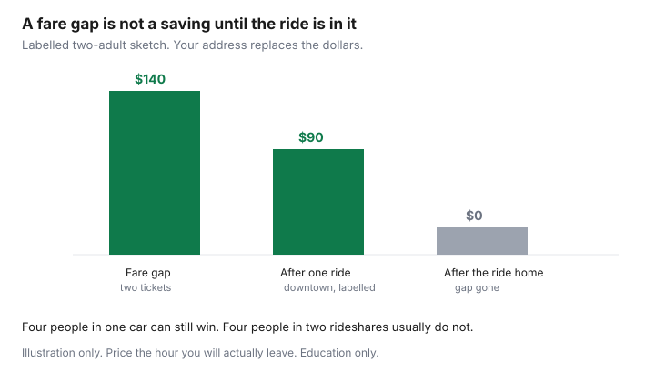

Travel · Canada
Alternate Canadian Airports That Cut Fares: Hamilton, Waterloo, Abbotsford, and More
The closest major airport is a habit, not a price. Hamilton, Waterloo, and Abbotsford sometimes undercut Pearson or Vancouver on a sun week or a domestic visit. The fare is a win only after the ride, the parking, and the thin schedule are in the same total as the ticket.
Who flies which route changes by season. This page is the household test, not a timetable. Expedia’s 2026 Canada booking windows, and the warning to price YHM, YKF, and YXX only after ground cost, are already in when to book from Canada. Use that window. Use this page to decide whether the other airport belongs on the search at all.
Disclosure: Flight search and online travel agencies are an offer type. Saving Optimizer may earn a commission if we later add those links. We do not currently claim a partnership with any airline, airport, or booking site. Education only.
Key takeaways
- Price the airport you will actually leave from. YHM (Hamilton), YKF (Region of Waterloo), and YXX (Abbotsford) are the Canadian secondary fields that show up on leisure and ultra-low-cost searches near Toronto and Vancouver. Montréal-Saint-Hubert (YHU) is the field to check against YUL when a carrier is actually scheduled.
- A fare gap is not a saving until you subtract ground transfer, parking, and any extra night. A $140 gap dies if four people need a rideshare or a car each way.
- A U.S. border airport (Buffalo, Burlington, Seattle) can beat YYZ or YVR on some trips. Add the border, a passport, and a NEXUS land return. Without the card, the queue is part of the fare.
- Smaller fields often have one or two flights a day. A winter cancellation is not “the next flight in two hours.” It can be tomorrow, on a fare that does not allow changes.
- Keep a shortlist of at most three airports for the trips you actually take. Rebuild it when the seasonal schedule changes, not from a blog’s memory of last summer.
- Set a separate Google Flights alert on each airport code. The “nearby airports” toggle hides the ground cost inside a fare that is not your airport.
List secondary airports with ULCC or leisure routes near major metros
A secondary airport earns a place on the list when a low-cost or leisure carrier publishes a route your household would actually fly, and the field is close enough that the drive is not a second trip. Major hubs stay on the list. They are the backup, not the enemy.
| Airport | Who it is for | What to verify this season |
|---|---|---|
| YHM, John C. Munro Hamilton | West Greater Toronto, Hamilton, Niagara, and Brantford households who can reach the field without crossing the city at rush hour. | Hamilton publishes a seasonal schedule of domestic and sun routes. Confirm the city pair and the days of the week. A route that ran in March may be gone in November. |
| YKF, Region of Waterloo | Households already in Waterloo Region, Guelph, or Cambridge. A Scarborough departure is rarely a YKF trip. | Ultra-low-cost flying has used YKF for domestic leisure, including western Canada. Confirm the week you travel. The schedule is thinner than Pearson. |
| YXX, Abbotsford | Fraser Valley households, and some Vancouver trips when the fare gap survives the drive past YVR. | Abbotsford–Toronto has been on ultra-low-cost schedules. Price it against YVR on the same days, then add the highway and parking. |
| YHU, Montréal-Saint-Hubert | South-shore and east-end Montréal households when a carrier is selling the route. | Do not assume YHU replaces YUL. If the flight is not on the airport’s current board, it is not an option. |
Billy Bishop (YTZ) is a different product. It saves a downtown Toronto household time, not usually a basic-fare dollar. Keep it in the time column. Do not treat it as the cheap airport. London, Kelowna, and Victoria are regional airports for people who live there. They are not “alternates” to Pearson for a household in Etobicoke.
Add ground transfer cost and time before calling the fare a win
Write one line: fare gap minus ground cost minus parking minus an extra night if the flight times force one. If the line is not clearly positive, fly the major airport.
| Line | Pearson habit | Hamilton alternative |
|---|---|---|
| Two one-way fares | $210 × 2 = $420 | $140 × 2 = $280 |
| Rideshare from a west-GTA address, labelled | $70 | $45 |
| Same rideshare from downtown at 4 p.m., labelled | $80 | $130 |
| Seven nights of parking, if you drive yourself | Use the lot you will actually book | Often cheaper, and only a win if the car is already the plan |
| Gap after a downtown rideshare | The $140 fare gap becomes about $90 once the more expensive ride is in it, before the return ride home | |

Time the drive in the hour you will leave, not at noon on a Tuesday. A 5 a.m. Hamilton departure that means leaving Mississauga at 3 a.m. is a different product from a noon flight. If the only flight home lands at 11:30 p.m. and the rideshare is another $130, the “cheap” ticket bought you a long day. Four people in one car can still win. Four people in two rideshares usually do not. Add bags. A basic fare that then needs a checked bag at the airport is the other guide: WestJet’s prepaid bag and the Air Canada and WestJet sizers.
When flying into a US border airport plus NEXUS land return beats YYZ/YVR
Some trips are cheaper into a U.S. field an hour from the Canadian airport you treat as home. The usual pairs are Buffalo (BUF) for Niagara and the west end of the Greater Toronto Area, Burlington (BTV) for Montréal’s south shore, and Seattle (SEA) for Vancouver. The ticket is in U.S. dollars. Convert it at the rate your card will actually charge, including a foreign-exchange markup if the card has one. The method is the FX guide. A fare that looks $80 cheaper in USD can be a tie after the conversion.
The return is a land border, not an air connection. You need a passport, not a driver’s licence, to fly. You need a plan for the car or the bus on the way home, and a plan for what happens if the flight into Buffalo lands late and the rental counter is closed. NEXUS is the product that makes a regular version of this trip tolerable. The card is $120 USD for five years, with children under 18 free when a parent is a member. The break-even is hours you fill in yourself, in the NEXUS guide. Without the card, a weekend queue at Peace Bridge, Derby Line, or Peace Arch is part of the fare. Do not book the U.S. airport for a funeral, a same-day meeting, or a winter Friday evening and hope the line is short.
A U.S. departure also changes bag fees and tax. WestJet and Air Canada price some fees in USD when the trip starts in the United States, and GST does not sit on a bag the way it does on a Canada-origin fee. Read that receipt separately. Preclearance exists at some Canadian airports and not at a U.S. field you are using as a bargain. You will clear U.S. customs there, and Canadian customs on the way home.
Schedule reliability and winter cancellation risk at smaller fields
A major hub has another flight. A secondary field often has the flight, and then tomorrow. That is the reliability problem, and it is worse from November through March.
- Frequency. If the board shows one departure a day, a cancellation is an overnight. Price a hotel near that airport before you call the fare a win. If you would not pay for that hotel, you do not have a backup.
- Winter. Freezing rain, fog, and a short de-icing queue hit thin schedules first. The airline may rebook you through the hub you were trying to avoid, a day later. A basic fare that does not allow changes leaves you waiting on the airline’s rebooking, not on a new ticket you can buy yourself without eating the first one.
- Your rights when they cancel. A cancellation the airline owns is a rebooking or a refund under the Air Passenger Protection Regulations, not a voucher you must accept. Weather the airline does not control is a different category. The worksheet is the refund versus voucher guide. A passenger who picked a thin airport still has those rights. The rights do not create a second flight that was never scheduled.
- The last flight of the day. On a small field, do not book it in January on a fare you cannot change unless the trip can slip a day. The hours you lose are the real price.
Ultra-low-cost carriers also change schedules weeks out. Re-read the confirmation when the airline emails a time change. A two-hour slide can miss the rideshare you already booked, or the shift you cannot miss. The 24-hour window to unwind a mistake is the booking-mistake guide. A schedule change the airline makes later is not that window. It is the airline’s problem to fix, and you should answer the email.
Build a household airport shortlist for sun and domestic leisure routes
Three airports is enough. More than that and nobody will search them. Build the list for the trips you take, not for a theoretical network.
- Sun weeks (Mexico, the Caribbean, Florida): home hub, one Canadian secondary field if a leisure flight is actually scheduled that month, and one U.S. border airport only if NEXUS or a calm weekday border is realistic. Shoulder months still matter. The month is the shoulder-season guide.
- Domestic visits (a parent in Halifax, a weekend in Calgary): home hub and the secondary field only when you live closer to it than to the hub. Do not drive from Scarborough to Waterloo to save $40.
- Write the ground cost once for your address, in the hour you usually leave. Reuse it. Do not rebuild the rideshare math from scratch on every search.
- Rebuild the list twice a year, when summer and winter schedules are published. A route that made Hamilton useful in February may not exist in September.
Put the shortlist where the booking happens: a note on the fridge, or the top of the shared trip sheet. The person who books should not have to remember that Abbotsford exists.
Set multi-airport Google Flights alerts so you catch the real deal
Google Flights can track a route and email a price change. Use it as a watch, not as a decision.
- Create one alert per origin you will actually use. YYZ and YHM are two alerts. A single alert with nearby airports turned on will celebrate a Hamilton fare as if you lived at the terminal.
- Turn nearby airports off, then type the airport code. Add the ground cost yourself, from the shortlist.
- Use a plus-or-minus three day calendar before you lock time off. A Tuesday fare that forces two extra vacation days is not cheaper for a household that works those days.
- Set the alert near the price you would pay, inside the booking window in the flight guide (domestic economy often 31–45 days out, international 15–30 days, in Expedia’s February 2026 Canada data). An alert six months out is a hobby.
- When the email arrives, open the fare brand. A dip that deletes the carry-on, or that lands at 11 p.m. on a one-flight field, is not the deal the email described.
If a booking site is easier for the multi-city search, use it to compare and then decide who issues the ticket. The airline and the agency do not share the same 24-hour fix. That choice is the next guide if the fare is wrong, and it is worth making on purpose when the fare is right.
Sources & date stamps
- Expedia.ca Air Hacks, as already cited in the booking-window guide — secondary airports only after ground cost; domestic and international booking windows from the February 2026 Canada signal. This page does not invent a new fare study.
- WestJet baggage and fare pages — basic-fare bag and change limits that change the all-in price of a secondary-airport ticket. Read 24 Sep 2026.
- NEXUS fee of $120 USD for five years, under 18 free with a parent member — see the NEXUS guide on this site. Re-read the official fee before you apply.
- Airport schedules for YHM, YKF, YXX, and YHU change by season. Confirm the current board before you book a transfer. No carrier timetable is copied here as if it were permanent.
Frequently asked questions
Which Canadian airports are the usual alternates to Pearson and Vancouver?
Hamilton (YHM), Region of Waterloo (YKF), and Abbotsford (YXX) are the secondary fields that show up on leisure and ultra-low-cost searches. Montréal-Saint-Hubert (YHU) is worth a look against Trudeau when a carrier is actually scheduled. Confirm this season’s board. A route that existed last winter may be gone.
How do I know a cheaper fare is actually cheaper?
Subtract the rideshare or the drive, parking, and any extra hotel night from the fare gap. Do it for the hour you will really leave, and for the whole party. A $140 gap dies if the downtown ride to the secondary airport costs more than the ride to the hub, especially once the trip home is included.
Is Buffalo, Burlington, or Seattle worth it?
Sometimes, after you convert the U.S.-dollar fare at the rate your card will charge and add the land border. A passport is required to fly. NEXUS is $120 USD for five years and is what makes a regular crossing tolerable. Without it, a weekend queue is part of the fare.
What if the only flight of the day is cancelled in winter?
On a thin schedule, the next flight may be tomorrow. Price that overnight before you book. A cancellation the airline owns is a rebooking or a refund under the Air Passenger Protection Regulations, not a voucher you must take. Those rights do not create a second flight that was never scheduled.
Should I turn on nearby airports in Google Flights?
No, if you want an honest fare. Search each airport code on its own and add the ground cost from your shortlist. A nearby-airport alert will celebrate a Hamilton fare as if you lived at the terminal.